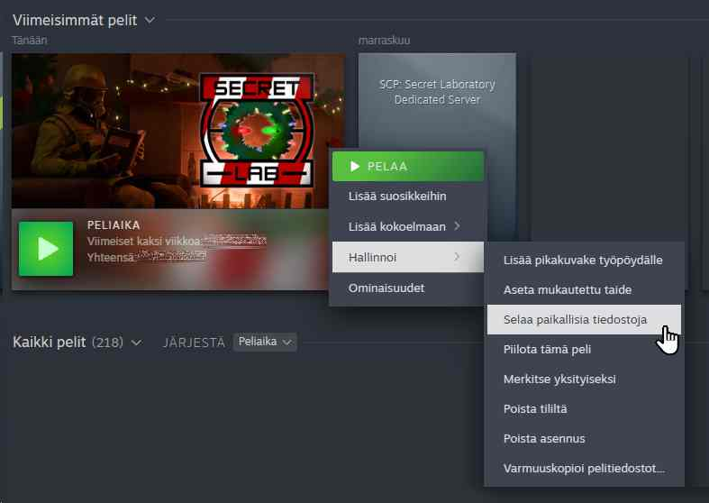
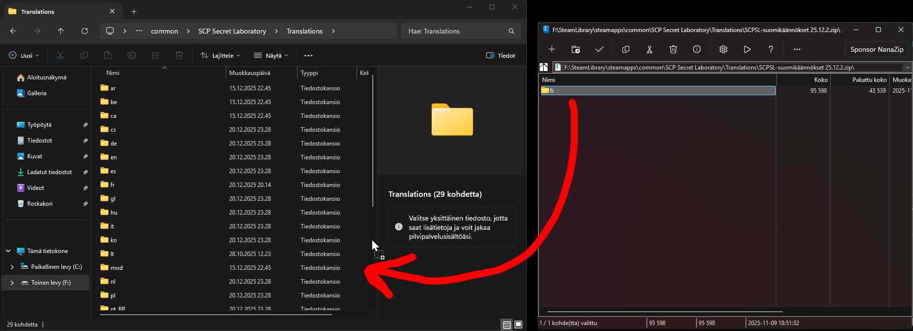
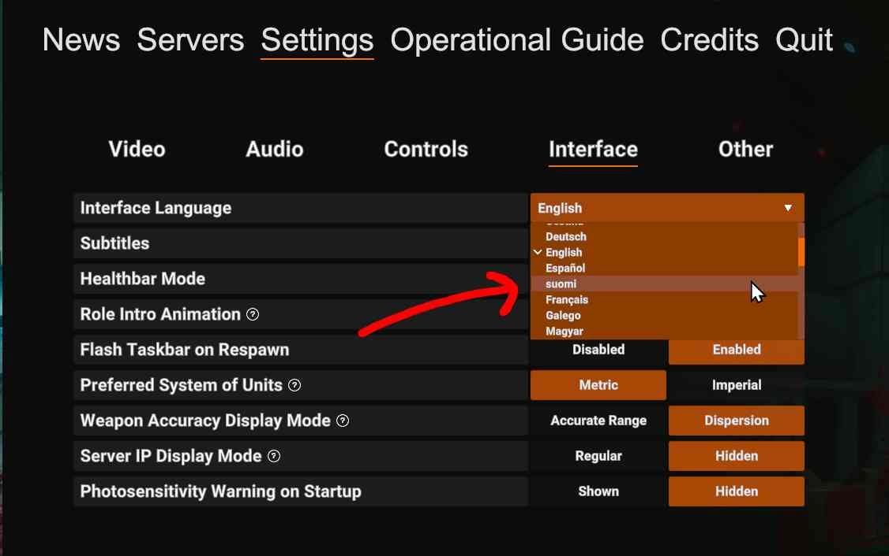

Kuinka asentaa käännökset peliin
1. Lataa käännökset
Mene lataussivulle ja paina sieltä värillistä nappia, jossa lukee "Lataa".
2. Avaa pelitiedostojen kansio
Pääset pelitiedostokansioon painamalla peliä Steamissä hiiren oikealla painikkeella. Valitse "Hallinnoi" > "Selaa paikallisia tiedostoja". Kun olet päässyt pelitiedostokansioon, avaa sieltä kansio, jonka nimi on "Translations".
3. Asenna käännökset
Avaa tältä sivulta lataamasi .zip-tiedosto ja siirrä sen sisällä oleva "fi"-kansio avaamaasi "Translations"-kansioon. Varmista, että "fi"-kansio päätyy samaan kansioon kuin muutkin maakoodikansiot, eikä vahingossa jonkin maakoodikansion sisälle.

4. Vaihda pelin kieleksi suomi
Avaa peli ja mene asetuksiin (Settings) ja valitse sieltä käyttöliittymäasetukset (Interface). Käyttöliittymäasetuksissa ensimmäinen valinta on pelin kieli (Interface Language), vaihda sen arvoksi "suomi". Suomen kieli on englantia kaksi paikkaa alempana.

5. Käynnistä peli uudelleen
Käynnistäthän vielä pelin uudelleen. Muuten kaikki käännökset (kuten SCP-079:n käännökset) eivät välttämättä näy ennen sitä.
6. Käännökset on asennettu
Voit pelata peliä nyt suomeksi.